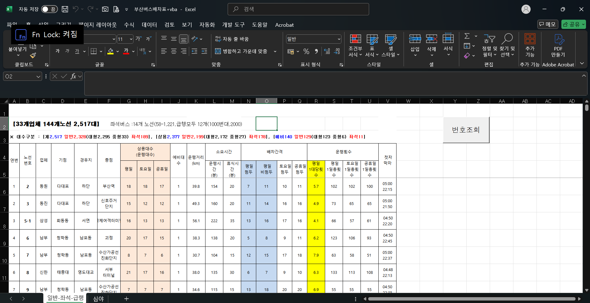

<doctype html>
    <head>
        <title>시내버스노선</title>
        <meta name="description" content="버스노선에 대한 정보를 제공">
        <style>
            dt {
                font-size: larger;
                font-weight: 600;
            }
            * { /*index.html과 95% 정도는 style이 같음*/
            margin: 0;
            padding: 0;
            box-sizing: border-box;
            font-family: "Noto Sans KR", "Nanum Gothic", "나눔고딕", NanumGothic, "돋움", dotum, Helvetica, sans-serif, AppleGothic;;
            }

            body, html {
            height: 100%;
            }

            header, section, footer {
            border: 1px solid black;
            padding: 10px;
            }

            header {
            height: 20%;
            }

            section {
            height: 65%;
            overflow: auto;
            }

            footer {
            height: 15%;
            display: flex;
            align-items: center;
            }
            #home {
                
                text-decoration: none;
                color: black;
            }
            hr {
                background-color: black;
                height: 1px;
                margin-left: 0px;
                margin-top: 1.1em;
            }
            .page_load {
                display: inline-block;
                text-decoration: none;
                color: black;
                font-weight: 700;
                margin: 1.5em;
            }
            #site {
                font-size: 20px;
                font-weight: 900;
            }
            .sup {
                margin-left: 50px;
                margin-right: 0px;
            }
             #resultBox { /*정류소 조회 결과가 나오는 박스 설정. 보기 좋게, 넘친 정보는 스크롤로 내려서 볼 수 있다.*/
                width: 100%;
                max-height: 300px;
                border: 1px solid #ccc;
                overflow: auto;
                padding: 10px;
                margin-top: 20px;
            }
            .bus-item { /*새로 만들어질 정류소 정보 span태그들의 class 설정*/
                display: block;
                margin-bottom: 5px;
                font-family: monospace;
            }
            .busbtn{
                width: 10em;
                height:3em;
            }
            #teamnm{
                background-color: rgb(201, 193, 193);
                position: fixed;
                width: 2em;
                height: 2em;
                right: 10px;
                bottom: 10px;
                text-align: center;
                border: 1px solid black;
                border-radius: 20%;
            }
        </style>
        


    </head>
    <body>
        <header>
            <div>
                <a id="home" href="index.html" target="_self">홈으로/처음으로</a>
            </div><hr>
            <h1>다양한 버스 정보</h1>
        </header>
        <section>
            
            <h2>버스 정류소 조회하기</h2><br>
            <button class="busbtn" onclick="goToResult()">정류소 조회</button><br>
            <div id="resultBox"></div><br><br><br>
            
            <!-- 지도 영역 (kakao map API가 여기에 표시됨) -->
            <div border="1" id="vmap" style="width:80%; height:600px;"></div>
            <button class="busbtn" id="moving" onclick="moving()">이동하기</button>
            
            
            
            <!-- <div id="map" style="width:100%; height:400px; margin-top: 20px;"></div> -->

            <br><hr>
            <!--download속성을 이용해 엑셀 파일을 다운로드 받을 수 있게 설정. 부산의 버스 배차에 대한 정보를 스프레드 시트로 만들어 놓은 것-->
            <h1>버스운행정보 다운로드</h1><br>
            <a href="로컬사진/부산버스배차표+vba.xlsm" download>부산버스배차표+vba.xlsm을 다운로드 하려면 여기를 클릭하세요</a><br><hr>
            <!--시각 자료-->
            <h3>다운로드 후 파일을 열었을 때 아래의 화면이 나온다면 정상적으로 다운로드가 된 것입니다.</h3>
            
        </section>
        <footer>
            <!--관련 사이트 이미지에 해당 사이트로 이동하는 하이퍼링크-->
            <span id="site">관련사이트</span>
            <a href="http://www.bxt.co.kr/express_bus.html" target="_blank">
                
            </a>
            <a href="https://bus.busan.go.kr/" target="_blank">
                
            </a>
            <a href="https://www.bus.or.kr/support/route.asp" target="_blank">
                
            </a>
            <a href="https://plato.pusan.ac.kr/" target="_blank">
                
            </a>
            <span id="teamnm">팀5</span>
        </footer>

        <script>
            //정류소 조회 함수, 공공데이터포탈의 부산광역시_부산버스정보시스템 open api를 사용 했다.
            async function goToResult() {
                const bstopnm = prompt("조회할 정류소 이름을 입력하세요:");
                
                if (!bstopnm) {
                    alert("정류소 이름을 입력해야 합니다.");
                    return;
                }

                const serviceKey = "Jjz5NOB6DJ7YWWnUj1ZvF0MTPp6fLI9JdtDpdKeiyJ7JnaichGrUvDeM6SPoR3MH4%2BSxAFRREmoBrLJwYkxt3g%3D%3D"; // 실제 키로 교체하세요

                const url = "https://apis.data.go.kr/6260000/BusanBIMS/busStopList";
                const query = `?serviceKey=${serviceKey}&pageNo=1&numOfRows=500&bstopnm=${encodeURIComponent(bstopnm)}`;

                //try, catch 구문으로 오류 발생 대비->오류 발생시 콘솔에 오류 정보 출력
                try {
                    const response = await fetch(url + query);
                    const xmlText = await response.text();
                    const parser = new DOMParser();
                    const xml = parser.parseFromString(xmlText, "application/xml");

                    const items = xml.getElementsByTagName("item");
                    const resultBox = document.getElementById("resultBox");
                    resultBox.innerHTML = ""; // 기존 결과 초기화

                    if (items.length === 0) {
                        resultBox.innerHTML = "<span>검색 결과가 없습니다.</span>";
                        return;
                    }

                    //item은 일련번호로 사용, api 이용결과 나온 정보들 중 정류장 이름, x좌표, y좌표를 각 변수에 지정
                    for (let i = 0; i < items.length; i++) {
                        const item = items[i];
                        const bstopnm = item.getElementsByTagName("bstopnm")[0]?.textContent || "없음";
                        const gpsx = item.getElementsByTagName("gpsx")[0]?.textContent || "N/A";
                        const gpsy = item.getElementsByTagName("gpsy")[0]?.textContent || "N/A";

                        //기존 resultbox라는 id를 가진 태그에 새로 만든 span태그를 한 줄 씩 집어넣음
                        const span = document.createElement("span");
                        span.className = "bus-item";
                        span.textContent = `${i + 1}. 정류소: ${bstopnm}, X: ${gpsx}, Y: ${gpsy}`;
                        resultBox.appendChild(span);
                    }
                } 
                catch (error) {
                    console.error("API 호출 오류:", error);
                    alert("데이터를 불러오지 못했습니다.");
                }
            }   
        </script>
        <!--국토교통부_2D 지도 API를 사용하려면 api를 불러와서 써야함. 이 바로 밑줄 src요소의 146번째 열 부터가 live server 사용으로 받은 port번호를 포함. 사용자의 수정이 필요!!-->
        <script type="text/javascript" src="https://map.vworld.kr/js/vworldMapInit.js.do?version=2.0&apiKey=1F892FE5-7763-3849-A481-534E3B2D40F6&domain=http://127.0.0.1:5500/%EC%9D%98%EA%B2%AC%EC%A7%91%ED%95%A9/%EC%8B%9C%EB%82%B4%EB%B2%84%EC%8A%A4%EB%85%B8%EC%84%A0.html"></script>
        <script>
            //만들 지도의 옵션 설정
            vw.ol3.MapOptions = {
            basemapType: vw.ol3.BasemapType.GRAPHIC
            , controlDensity: vw.ol3.DensityType.EMPTY
            , interactionDensity: vw.ol3.DensityType.BASIC
            , controlsAutoArrange: true
            , homePosition: vw.ol3.CameraPosition
            , initPosition: vw.ol3.CameraPosition
        }; 
            
            //지도 객체를 vamp에 저장
            var vmap = new vw.ol3.Map("vmap",  vw.ol3.MapOptions); 
            
            //경도 위도를 입력받으면 해당위치로 이동하는 함수. 애니메이션을 사용해 천천히 이동함. fnMoveZoom도 불러서 이동 후 자동 확대도 함.
            function move(x,y,z){       
                var _center = [ x, y ];    
                var z = z;
                var pan = ol.animation.pan({
                    duration : 2000,
                    source : (vmap.getView().getCenter())
                });
                vmap.beforeRender(pan);
                vmap.getView().setCenter(_center);
                setTimeout("fnMoveZoom()", 3000);
                
            };
            
            //줌 크기를 확인하고 너무 멀면 줌을 확대
            function fnMoveZoom() {
                zoom = vmap.getView().getZoom();
                if (16 > zoom) {
                    vmap.getView().setZoom(14);
                }
            
            };

            //경도 위도를 입력받고 그걸 다시 move함수를 불러서 매개 변수에 넣는 함수. 일반적으로 아는 경도, 위도와 숫자 차이가 큰 단위를 쓰기에 241번 줄에서 단위를 변환해 사용
            function moving(){
                var gx=prompt("gpsx를 입력하세요")
                if (gx==null){
                    return;
                }
                var gy=prompt("gpsy를 입력하세요")
                if(gy==null){
                    return
                }
                gx = Number(gx);
                gy = Number(gy);

                if (isNaN(gx) || isNaN(gy)) {
                    alert("숫자를 입력해야 합니다.");
                    return;
                }
                var coord = ol.proj.fromLonLat([gx,gy]);  // 예시 : 부산대정문 [129.086958659549, 35.232361662798]
                move(coord[0], coord[1], 15);
            }
            
        </script>
    </body>
</doctype>
